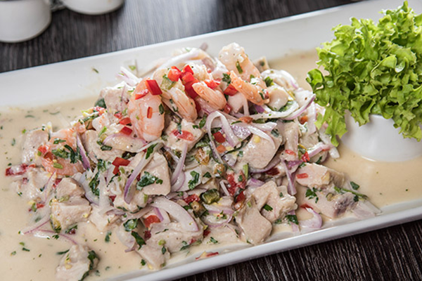

El ceviche es un plato consistente en carne marinada ―pescado, mariscos o ambos― en aliños cítricos. Diferentes versiones del ceviche forman parte de la cultura culinaria de diversos países hispanoamericanos litorales del océano Pacífico de donde cada una es nativa: Chile, Colombia, Costa Rica, Ecuador, El Salvador, Guatemala, Honduras, México, Nicaragua, Panamá y Perú. En este último se lo considera como plato bandera y patrimonio cultural.
Ingredientes
- 300 gramos de reineta
- 1 pimentón rojo picado
- 1 pimentón verde picado
- 1 cebollín entero picado
- 2 cebollas moradas cortadas en pluma
- 1 taza de aceite
- Media taza de jugo de limón
- 1 pizca de pimienta
- Jengibre
- cebolla molida
- 1 pizca de sal
Pasos
- Picar en cubos la reineta y luego refrigerarla.
- En un bol mezclar el aceite con el jugo de limón y los condimentos.
- Agregar los cubos de reineta con la cebolla morada, pimentones y cebollín a la mezcla de jugo de limón.
- Dejar reposar en el refrigerador al menos 30 minutos y luego servir.